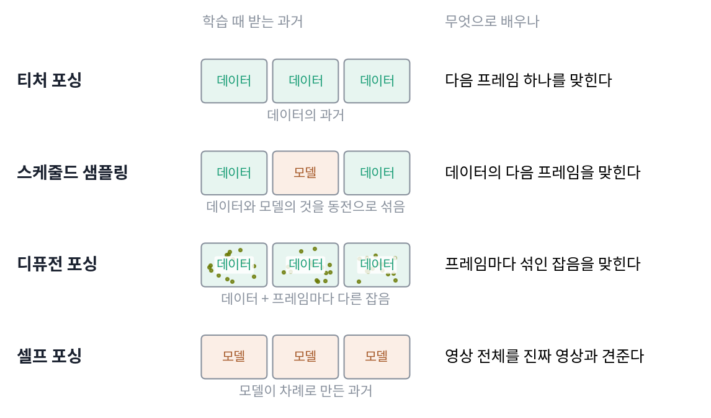
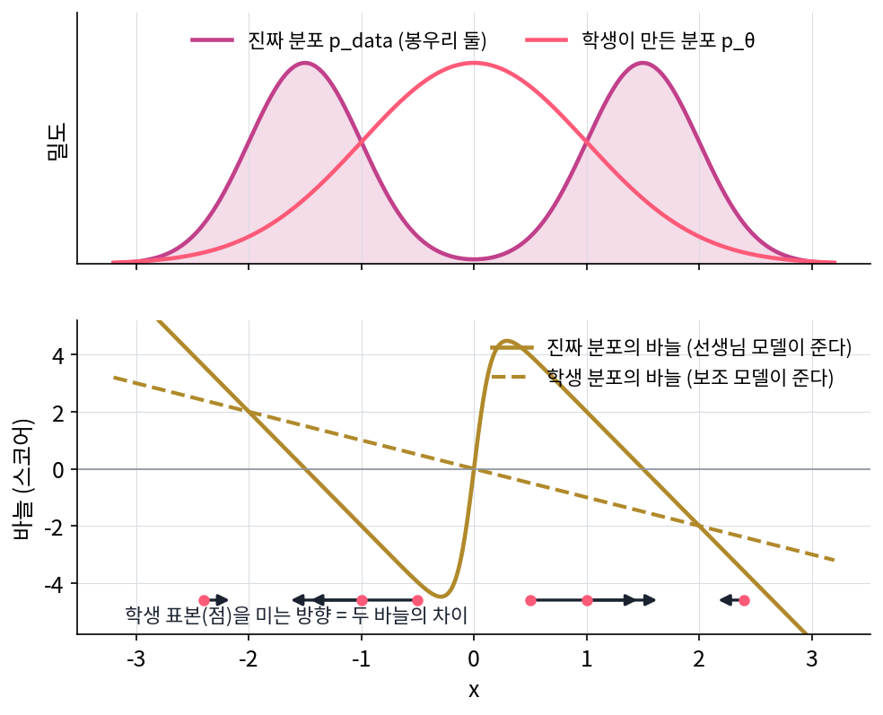

셀프 포싱: 학습 때도 자기 과거로 굴린다
디퓨전 포싱은 잡음 섞인 과거를 조건으로 배워 오류 누적을 늦췄다. 하지만 학습 때 조건으로 받는 과거는 여전히 데이터의 과거에 잡음을 섞은 것이다. 모델이 직접 만든 과거와는 다르다. 모델의 과거는 흐릿하게 틀리는 것이 아니라 그 모델 나름의 버릇대로 틀린다. 노출 편향을 뿌리에서 없애려면, 학습 때도 생성할 때와 똑같이 모델이 자기 과거를 딛고 영상 전체를 굴려야 하지 않을까? 그러려면 굴리는 값이 싸야 한다. 그리고 스케줄드 샘플링에서 본 것처럼 목표도 바꿔야 한다.
역사: 느린 양방향 모델에서 빠른 자기회귀 모델로
2024년 12월 인(Tianwei Yin)과 동료들은 CausVid(「From Slow Bidirectional to Fast Autoregressive Video Diffusion Models」, CVPR 2025)에서 먼저 속도 문제를 풀었다. 품질 좋은 양방향(전체 시퀀스) 모델을 선생으로, 과거만 보는 자기회귀 모델을 학생으로 두고 증류했다. 증류는 선생 모델이 여러 걸음에 간 곳을 학생이 적은 걸음에 가도록 배우게 하는 것이다. 선생은 50걸음으로 걷어 내지만 학생은 4걸음으로 걷어 낸다. 엔비디아의 데이터센터용 GPU H100 한 장에서 1초에 9.4프레임을 만들었다. 다만 학생을 학습시킬 때 넣어 준 과거는 여전히 디퓨전 포싱처럼 데이터의 프레임에 잡음을 섞은 것이었다.
2025년 6월 CausVid 의 마지막 저자였던 황(Xun Huang)과 동료들은 「Self Forcing: Bridging the Train-Test Gap in Autoregressive Video Diffusion」(NeurIPS 2025)을 냈다. 이름의 「self」가 핵심이다. 학습 때도 모델이 자기가 만든 프레임을 과거로 받는다. 논문은 CausVid 가 학습 때 맞춘 분포가 실제로 영상을 만들 때의 분포와 어긋나서 효과가 크게 깎인다고 짚었다.
학습 중 굴리기와 영상 전체의 손실
학습 걸음마다 영상을 처음부터 자기회귀로 만든다. 첫 프레임(덩어리)을 4걸음으로 걷어 내고, 그 프레임을 처리하며 계산한 열쇠와 값을 KV 캐시에 적어 둔 뒤, 그것을 읽으며 둘째 프레임을 만든다. KV 캐시는 언어모델이 한 토큰씩 이어 쓸 때 앞 토큰들의 열쇠와 값을 적어 두고 다시 쓰는 장치로, 앞만 보도록 가려 둔 모델이라 앞 프레임의 열쇠와 값이 다시 바뀌지 않는다. 생성할 때와 똑같은 걸음이다. 이렇게 모델을 실제로 굴려 표본을 만드는 것을 롤아웃(rollout)이라 한다. 그렇게 만든 영상 전체를 놓고, 진짜 영상의 분포와 얼마나 가까운지를 손실로 삼는다. 프레임 하나의 정답을 맞히는 대신 영상 전체를 통째로 평가하는 손실이다.
아래 그림은 지금까지 나온 네 학습법이 학습 때 받는 과거와 배우는 목표를 나란히 놓은 것이다.

논문은 이 자리에 손실 세 가지를 시험했다. 분포 맞추기 증류(distribution matching distillation, DMD), 두 분포의 바늘 차이를 제곱해 재는 피셔 발산 쪽 증류(SiD), 진짜와 가짜를 가려내는 판별기와 겨루는 손실이다. 첫째인 DMD 가 줄이는 것은 이것이다.
KL 발산(두 분포가 얼마나 다른지 재는 양)은 어느 쪽을 앞에 두느냐에 따라 값이 다르다. 데이터를 앞에 둔 KL(pdata ‖ pθ)을 줄이는 것이 데이터의 표본으로 로그우도를 키우는 보통의 학습이고, 티처 포싱도 이쪽이다. 위 식은 모델을 앞에 둔 쪽이라 역방향 KL 이라 부른다. 기댓값이 x ∼ pθ, 곧 모델이 직접 만든 영상 위에서 계산된다는 점이 티처 포싱과 가장 크게 다르다.
두 바늘의 차이로 미는 방향
실제로 log pdata를 계산할 수는 없다. 그런데 학생의 매개변수를 고치는 데 필요한 것은 그 값이 아니라 기울기다. 학생 Sθ가 잡음 ε을 받아 영상 x = Sθ(ε)를 만든다고 하면, 위 KL 을 매개변수로 미분한 것은 두 분포의 스코어, 곧 로그 밀도를 자리로 미분한 바늘의 차이로 쓸 수 있다.
이 손실은 CausVid 의 제1 저자가 동료들과 2023년 말 그림 한 장을 한 걸음에 만드는 학생을 증류하려고 내놓은 분포 맞추기 증류(DMD, CVPR 2024)에서 왔다. 그 논문은 이 KL 의 기울기가 「두 스코어 함수의 차이」로 쓰인다는 데서 출발했다. 엔트로피 쪽의 기울기는 학생 분포의 바늘 sfake로 들어온다. fake 는 논문이 붙인 이름표로, 학생이 만든 가짜 쪽이라는 뜻이다. 학생의 표본마다 두 바늘의 차이가 「진짜 분포 쪽으로 가려면 이 표본을 어느 쪽으로 옮겨야 하는가」를 알려 주고, ∂x/∂θ가 그 옮김을 매개변수의 고침으로 바꾼다. 실제로는 두 분포에 같은 수준의 잡음을 섞은 뒤 두 디퓨전 모델로 바늘을 읽는다. 잡음 섞인 분포의 바늘은 디퓨전 모델이 늘 하던 일이기 때문이다.
1차원으로 줄여 보자. 진짜 분포는 −1.5와 1.5에 봉우리가 있고, 학생은 가운데 봉우리 하나짜리 표준정규분포를 만든다.

x = 1에서 진짜 바늘은 +2(봉우리 1.5 쪽), 학생 바늘은 −1(제 봉우리 0 쪽)이라 차이는 +3이다. 이 표본은 오른쪽 봉우리 쪽으로 밀린다. 가운데에 몰린 학생 표본들이 두 봉우리로 갈라져 나가는 쪽으로 학생이 고쳐진다. 학생이 만든 영상 전체를 이렇게 진짜 영상 분포 쪽으로 미는 것이 셀프 포싱이 쓰는 손실이다. 이처럼 학습 때도 모델이 자기 과거를 딛고 영상 전체를 굴린 뒤, 그 영상 전체를 진짜 영상의 분포와 견주는 손실로 배우는 학습법을 셀프 포싱 (자기 과거로 굴려 배우기 / self forcing)이라 한다.
영상 전체를 여러 걸음으로 굴리고 그 전부로 기울기를 흘리면 메모리가 버티지 못한다. 셀프 포싱은 학습 걸음마다 잡음 걷어 내기를 몇 걸음에서 멈출지 무작위로 골라 프레임마다 마지막 걸음으로만 기울기를 흘리고, 앞 프레임에서 오는 기울기는 끊었다. 결과는 H100 한 장에서 1초에 17프레임, 첫 화면까지 0.69초였다. 알리바바의 매개변수 13억 개짜리 Wan2.1 모델에서 출발해 덩어리 단위로 만든 설정이고, 품질은 훨씬 느린 양방향 모델과 맞먹거나 앞섰다고 보고했다.
문제 11. 두 가지 피아노 연습
연주회를 앞둔 학생의 두 연습법이다. A: 선생님이 옆에 앉아 있다가 틀린 음이 나오면 바로 멈추고, 그 마디를 악보대로 쳐 준 뒤 다음 음부터 이어 치게 한다. 점수는 「음마다 맞았는가」로 매긴다. B: 처음부터 끝까지 멈추지 않고 혼자 친 것을 녹음해 듣고, 선생님이 「곡 전체가 음악처럼 들리는가」로 평가한다. (가) 연주회 무대와 조건이 같은 연습은 어느 쪽인가? (나) B로 연습하면 무엇이 비싸지는가?

(가)는 A요. 선생님이 옆에서 다 맞춰 주니까 실수가 거의 없잖아요. 무대에서도 실수가 적겠죠.

민준 학생, 무대에서 틀린 음이 나오면 누가 그 마디를 바르게 쳐 주죠?

아무도요. 틀린 채로 다음 음을 이어야 하네요. A는 늘 바르게 쳐진 마디 뒤에서 이어 쳤으니까, 틀린 마디 뒤에서 이어 치는 건 해 본 적이 없고요. 무대와 같은 건 B예요.

그래요. B는 자기가 친 소리 위에서 이어 가고, 평가도 곡 전체로 받죠. (나)는요?

한 번 평가받으려면 곡을 처음부터 끝까지 쳐야 해요. A는 틀린 마디만 다시 치면 되는데요.

4분짜리 곡이면 B는 연습 한 번에 4분이 들어요. A는 몇 초짜리 마디를 고치는 데서 끝나고요. 무대와 같은 조건을 얻는 대신 연습 한 번이 훨씬 비싸요.

발표 리허설을 슬라이드마다 끊어 고쳐 가며 하는 것과, 실전처럼 끝까지 한 번에 하고 피드백을 받는 것의 차이네요. 뒤쪽이 진짜 같지만 시간이 몇 배로 들죠.
문제 12. 두 바늘의 차이
진짜 분포가 표준정규분포 N(0, 1)이고, 학생은 평균 −1, 표준편차 0.5인 정규분포를 만든다. 정규분포 N(m, s²)의 바늘은 −(x − m)/s²이다. (가) x = −1.5, −1, −0.5에서 진짜 바늘, 학생 바늘, 둘의 차이(진짜 − 학생)를 구하시오. 차이가 0인 자리는 어디인가? (나) 학생 표본들을 이 차이 쪽으로 옮기면 학생 분포의 평균과 폭은 어느 쪽으로 바뀌는가? (다) 학생의 바늘을 진짜 바늘로 착각해 「진짜 바늘만 따라 옮기면 된다」고 하면 무엇이 문제인가? 위젯 3의 「문제 12 불러오기」로 확인한다.

(가)는 식에 넣으면 돼요. x = −1.5에서 진짜는 +1.5, 학생은 −(−1.5 + 1)/0.25 = +2, 차이 −0.5. x = −1에서 진짜 +1, 학생 0, 차이 +1. x = −0.5에서 진짜 +0.5, 학생 −2, 차이 +2.5요. 차이가 0인 자리는 −x + 4(x + 1) = 0을 풀어 x = −4/3이에요.
차이의 부호가 −4/3을 사이에 두고 바뀌네요. 왼쪽 표본과 오른쪽 표본은 각각 어디로 밀리죠?

−4/3보다 왼쪽은 더 왼쪽으로, 오른쪽은 오른쪽으로요. 그리고 오른쪽일수록 화살표가 커요. 그럼 표본들이 벌어지면서 대체로 오른쪽으로 가는 거네요.

평균은 오른쪽으로, 폭은 넓게. 학생이 너무 왼쪽에 좁게 몰려 있었으니 진짜 분포 쪽으로 맞는 방향이야. 화살표의 평균은 학생 표본 전체로 보면 +1이고, 위젯에서 한 걸음(학습률 0.1) 옮기면 N(−0.9, 0.65²)이 돼.
(다)는요? 진짜 바늘만 따라가면 안 되나요?
진짜 바늘만 따라가면 표본마다 진짜 봉우리 0 쪽으로 가니까, 결국 모든 표본이 0 한 점에 모여요. 평균은 맞아도 폭이 0으로 무너지고요. 학생 바늘을 빼 주는 것이 「이미 내가 몰려 있는 쪽으로는 덜 가라」는 몫이에요. 엔트로피 항이 하는 일이네요.

그래요. 두 바늘의 차이가 0이 되는 것은 학생의 분포가 진짜 분포와 같아질 때뿐이에요.
조별 발표 준비에서 「교수님이 좋아할 것」만 따라 하면 모든 조가 똑같은 발표를 하게 되는 거네요. 다른 조와 이미 겹치는 건 피해야 골고루 나오고요.